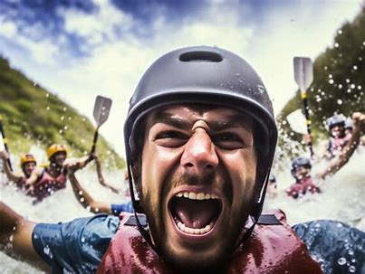
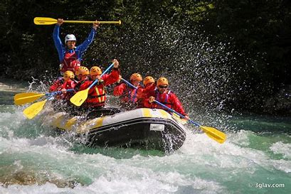
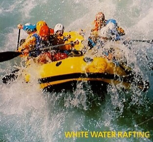
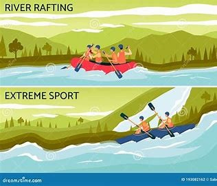
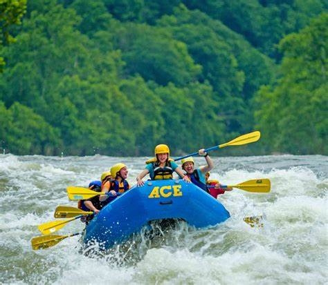
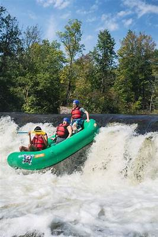
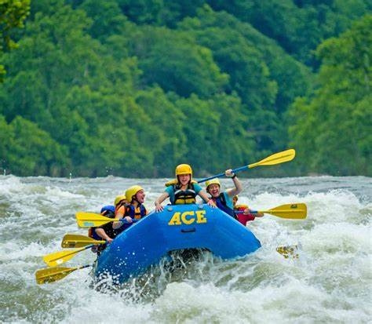
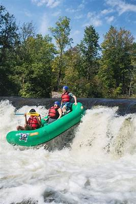

A white-water rafting company exists to ignite adventure, foster teamwork, and create unforgettable experiences on the river. Its mission is to provide safe, exhilarating rafting excursions that challenge and inspire people of all backgrounds while preserving the beauty and integrity of nature. Guided by the creed that every rapid conquered builds confidence and camaraderie, the company is dedicated to professionalism, environmental stewardship, and delivering adrenaline-filled moments with a personal touch. Its motto—“Ride the Rapids, Embrace the Adventure”—reflects its commitment to adventure, resilience, and the thrill of the wild waters.


White Water Rafting
History.
The white-water rafting company was founded with a passion for adventure and a deep appreciation for the untamed beauty of rivers. Beginning as a small group of thrill-seekers eager to share their love for rafting, the company quickly grew into a respected provider of guided river expeditions. Over the years, it has expanded its operations, refining safety protocols, training expert guides, and introducing new routes that offer both adrenaline-pumping rapids and breathtaking scenic views. Through a commitment to excellence, environmental stewardship, and customer satisfaction, the company has built a legacy of unforgettable experiences—where every trip down the river is more than just a ride; it's an adventure in courage, teamwork, and pure exhilaration.
Adventure Awaits You!
  


